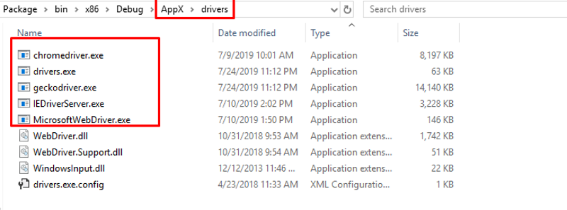
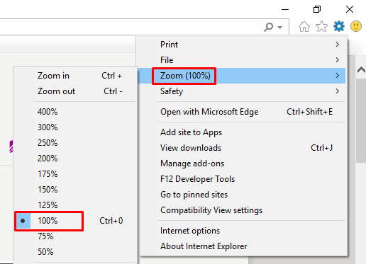

本ツールは、ウェブサイト検証ツールです。以下の特徴があります。
• ブラウザに依存しない。IE,Chrome,Firefox,..などがすべて実行されます。
• プログラム言語に依存しない。Java, C#, PHP,..などのサイトがすべて実行されます。
• Console版は、OSに依存しない。Windows,Linux,MacOS,..に問わず実行されます。
• サイトの構築フレームに問わずに、自動的に検索されます。
• 言語に依存しない。日本語、英語、中国語,...を問わずにテストケースが作成できます
本ツール言語を選択してください。デフォルトは、英語ですが。現在英語と日本語しか対応していない。
Step 1
Step 2
起動する時デフォルト「マニュアルを開く」ですが。この辺でマニュアルをご覧ください。
Step 3
設定を編集する機能は、テキスト内容で、ブラウザを使用有無に設定して（コメントアウト）。コメント記号は、行の先頭に「//」や「#」をつけてください。
また各ブラウザ事につけて、テストケースファイルやフォルダーを設定してください。
絶対パスも相対パスもかまわない。フォルダーの場合は、直下にすべてファイルを実行されます。
Step 4
「すぐ試験を試す」機能は、簡単に左側に直接テキストを入力して、や貼り付けて、「実行する」ボタンを押下すると試験を行う。
これは、タブレートや簡単テストケースをすぐ検証できる機能です。
Step 5
「実行する」機能は、設定する内容を通して、試験を行います。試験が終わったら、試験結果フォルダーを表示する。ここで結果をご確認ください。
Step 6
この機能は、試験結果フォルダー設定や参照する
1. パラメータ設定
• 言語、エンコーディング、実行スピードなどを設定できます。
エラーが見つけたら、強制終了(StopErrorFile == YES)又は(StopErrorFile == NO)最後まで、進めて、いくつNGやOKケースをまとめる事ができます。

2. ブラウザ追加• 削除
• ステップ①：インストールフォルダ直下に「drivers」フォルダがあります。
Seleniumサイトからダウンロードしたドライバをそちらに配置してしてください。

• ステップ②：インストールフォルダ直下に「TestSetting.txt」設定ファイルがあります。
以下EDGEブラウザのようなブラウザ該当する情報を記載してください。
• ブラウザリストにブラウザ名(ClassName)を追加してください。
• ブラウザの付属するテストケースフィルも追加してください。

※ブラウザを削除する手順は、逆ですが、普段そのブラウザが使わない時は、ブラウザ一覧にコメントアウトしてください。
3. 制限(IEとEDGEブラウザのみ)
• 現在、Windows 10 バージョン1803までIE又はEDGEがサポートされていいます。
しかし、バージョン1809以降は、ドライバーアップデート待ち状態です。
4. セキュリティ設定（IEブラウザのみ）
• IEブラウザのみに対して、以下の設定が必要です。


1.現在の有名なテキストファイル形式以下の例です
• xml形式：「< >」タグ内で記載する
•
json形式：「：{}」
2.しかし、上記の物は人間として、読む事や書く事が難しいので
今回、「[ ]
==」を使って、独自なテキスト形式を定義致します。
例）
• // （キー、値）仕組み
[KEY]
subKey1 == abc
subKey2
== xyz
• // リスト仕組み
[KEY]
abcd
zyxt
123
[END]
3. 以下は、テストケースファイル
例）
[LOCATORS]
baseUrl ==
manual/canvas.html
button == /html/body/div/button
imgage
== /html/body/div/img
[testcase1]
LOAD, baseUrl, null,
null
wait,
null, 1000 , null
null, imgage, 30, 40
wait, null, 1000
, null
null,
button, null, null
alert, dismiss, null, null
wait, null, 10000 , null
[COMMANDS]
testcase1
[END]
1. Chromeブラウザなど上で、Xpathを取得する
• ページにを右をクリック → Inspect
•
HTML項目（ボタン、テキストボックスなど）にマウスを右にクリック → Inspect → Copy
→Copy Xpath

【結果】ButtonXpath == /html/body/div/button
2. Chromeブラウザなど上で、CssSelectorを取得する
• ページにを右をクリック →
Inspect
• HTML項目（ボタン、テキストボックスなど）にマウスを右にクリック → Inspect → Edit as HTML

【結果】ButtonCssSelector ==
button[class='btn'][onclick='myFunction()']|Click Me!
• 概要形式：CssSelector | 表示文字列|Index
• 画面上で、複数項目があれば、検索順番で指定でいる
例）
ButtonCssSelector_0 ==
button[class='btn'][onclick='myFunction()']|Click Me!|0
ButtonCssSelector_1 ==
button[class='btn'][onclick='myFunction()']|Click Me!|1
• 画面上で、複数階層であれば、親 > 子で指定できる
ButtonCssSelector == div[class='container'] >
button[class='btn'][onclick='myFunction()']|Click Me!
3. canvas場合は、座標で確定する（画面解像度に影響があると思います）
• ページにを右をクリック → Inspect
• JavaScriptコードより、デバッグで、(x,y)座標を取得できる

1. 記載ルール
|
1
|
2
|
3
|
4
|
5
|
|
FRAME
|
HTML項目
|
値/x座標
|
期待値/y座標
|
アクション
|
※コマ「,」で、コマンドパラメータを区切るので、コマが含むパラメータは、ダブルクォーテーションうをつけてください。
※「null」は空きですが、スペースと区別する。何もない場合は、スペース一個になる。大文字と小文字がかまわない。
※デフォルトアクション（クリック）又は、値設定、値認証場合は、「5.アクション」が省略できる。
例）
frame,
ElementXPath, null, null, CLICK
frame,
ElementXPath, null, null
2. コマンド定義
[LOCATORS]
ElementXPath == //*[@id="item004"]
ElementCssSelector == div[id$='_free_tableopen'][class='tableOpen']|
ImportData == cmd.exe /c cls & start cmd.exe /c " mysql -u
username -p password database_name < sql/import_data.sql "
HomePage== http://localhost:8080/index.html
CLICK,
MOVE_TO_ELEMENT, DOUBLE_CLICK, CONTEXT_CLICK, MOVE_BY_OFFSET,
CLICK_AND_HOLD, RELEASE
MOUSE
(MOUSE_MOVE, MOUSE_CLICK, MOUSE_RIGHT_CLICK, MOUSE_DOUBLE_CLICK)
KEY
(VirtualKeyCode)
例）RETURN, CONTROL, TAB, VK_A, VK_B,…
https://docs.microsoft.com/en-us/windows/desktop/inputdev/virtual-key-codes
ASSERT_NOT_NULL
ASSERT_NULL
ELEMENT_NOT_VISIBLE
ELEMENT_VISIBLE
3.通常コマンド
• null,
ElementXPath, null, null
• null, ElementCssSelector, null, null,
MOVE_TO_ELEMENT
• frame, ElementXPath, null, null
• frame,
ElementCssSelector, null, null, DOUBLE_CLICK
• frame,
ElementXPath, 30, 40, CLICK
• frame, ElementCssSelector, OK, OK
• frame,
ElementCssSelector, OK, OK, メッセージ
• frame, リレーション選択, 売上データ, null
• null, Slide,
"'style','left: 0%'", null, SET_ATTRIBUTE
• frame,
リレーション選択, null, 売上データ
• frame, ElementXPath, null, null,
ASSERT_NOT_NULL
• frame, ElementXPath, null, null, ASSERT_NULL
• frame,
ElementXPath, null, null, ELEMENT_NOT_VISIBLE
• frame,
ElementXPath, null, null, ELEMENT_VISIBLE
3. ALERT
• alert, dismiss, null,
null
• alert,
accept, null, null
• alert, assert, null, xyz
• alert, accept|dismiss,
null , null 又はalert, accept|dismiss, null|null , null
• alert,
accept|assert, null , null | ABC
• alert, accept|KEY, null
|ALT; VK_S-> ALT; VK_N , null
4. MOUSE
• MOUSE, null,
x, y, MOUSE_MOVE
• MOUSE, null, null, null, CLICK
• MOUSE, null, null, null, DOUBLE_CLICK
• MOUSE, null, null,
null, RIGHT_CLICK
5. KEY
• KEY, null, RETURN,
null
• KEY,
null, ALT; VK_S, null
• KEY, null, ALT; VK_S-> ALT;
VK_N, null>
6.RUMTIME
• RUNTIME, ImportData,
null, null
7. LOAD
& RELOAD
• LOAD, HomePage, null, null
• KEY, null, CONTROL;VK_T, null
• RELOAD, HomePage, 1, null
• RELOAD, null, 0, null
• RELOAD, , 0, null
• RELOAD, BaseUrl,
0, null
8. WAIT
• wait, null, 1000,
null
9. NONE
• NONE,
ElementXPath, null, null
以下のサンプルを見ながら説明しています。
• testdata/common/Setup.txt
• testdata/sql/import_data.sql
• testdata/sql/restore_data.sql
• testdata/all/programing.txt
---------------------------------Setup.txt-----------------------------------
[LOCATORS]
HomePge ==
localhost:8080/Index.html
LoginID == //*[@id="email"]
LoginPass
== //*[@id="pass"]
ImportData == mysql -u username -p password
database_name < sql/import_data.sql
[login_block]
LOAD, HomePge, null,
null
null, LoginID, username, null
null, LoginPass, abc,
null
[ImportTestData_block]
RUNTIME,
ImportData, null, null
wait, null, 30000, null
[RestoreData_block]
RUNTIME,
ImportData, null, null
wait, null, 30000, null
[displayConsole（IE)]
wait, null,
1000, null
KEY, nnull, VK_F12->CONTROL;VK_2, null
wait,
null, 1000, null
[displayConsole(CHROME)]
wait,
null, 1000, null
KEY, null, VK_CONTROL;VK_SHIFT;VK_J, null
wait,
null, 1000, null
[displayConsole]
wait, null, 1000,
null
KEY, nnull, VK_F12, null
wait, null, 1000, null
[END]
---------------------------------import_data.sql-----------------------------------
CREATE TABLE students IF NOT EXSITS (
student_id INT NOT NULL,
student_name
VARCHAR(30) NOT NULL,
PRIMARY KEY (student_id),
UNIQUE
(student_name)
);
INSERT INTO students
(student_id, student_name)
VALUES
(1,"Tacos"),
(2,"Tomato Soup"),
(3,"Grilled
Cheese");
---------------------------------restore_data.sql-----------------------------------
DELETE ALL FROM students;
---------------------------------programing.txt-----------------------------------
[IMPORT]
testdata/common/Setup.txt
[LOCATORS]
GetDataButton == //*[@id="get_data"]
StudentListBox
== //*[@id="user_list"]
[testcase1]
ImportTestData_block
login_block
null,
GetDataButton, null, null
null, StudentListBox, null, Tacos | Tomato Soup
| Grilled Cheese, check 3 students
RestoreData_block
[COMMANDS]
testcase1
[END]
---------------------------------programing.txt-----------------------------------
1. 変数
• Locators(Xpath又はCssSelector)が変数の役割で扱います。
• Setup.txtファイルの中に共有なLocators（のHomePge、LoginIdなど）がグローバルと似ている。
• programing.txtファイルの中に「GetDataButton
、StudentListBox」は、ロカール変数と似ている。もちろん名前が重なる場合は、ロカール変数が優先する
2.メソッド
• 毎回繰り返す操作組を「」で定義する操作メソッドイメージです。一か所で定義して、たくさんのところで、呼び出す事ができる。これは、すごく便利で、テスターは、工数が節約できる。
例）
Setup.txtの[login_block]や[ImportTestData_block]など、呼び出す時は、簡単にコマンド
：login_block
• 操作メソッド拡張機能：各ブラウザの動作で、異なる操作場合があります。例）上記で、コンソールローグ表示する時は、
IE
：F12 → （SHIFT + 2） ： displayConsole（IE)
Chrome : CONTROL
+ SHIFT + J ： displayConsole(CHROME)
それで、個別の処理メソッドを定義する。又はIE,Chrome以外は、デフォルト displayConsole定義する
呼び出す側に、個別メソッドを問わずに、displayConsoleをそのまま呼び出す。
※個別メソッドは、()括弧中で設定ファイルに定義したブラウザ名を入れてください。
3.クラスIMPORT
• 上記で、programing.txtファイルがSetup.txtファイルを呼び出して、すべて、変数やメソッドが使えます。クラス継承と似っている。
• メソッド名が重なる場合は、ロカールメソッドが優先する(overide)
簡単なサンプルテストケースは、testdataフォルダー直下に用意する
1. 試験プロジェクト
このサンプルは、試験用データ、テストケースを一式にまとめる。CやJavaプロジェクトと似っている。目的としては、各画面、機能によってわけるかもしれません。
このサンプルは、参考する物です。データベースや画面にに依頼するので実際環境のあわせて、実行してください。
• testdata/common/Setup.txt
• testdata/sql/import_data.sql
• testdata/sql/restore_data.sql
• testdata/all/programing.txt
2.以下のロカールサンプルが実行できる。
• Guide.txt
• Button.txt
• Canvas.txt
• Frame.txt
3.facebookサイトにログインサンプルです。
• LoginFacebook.txt